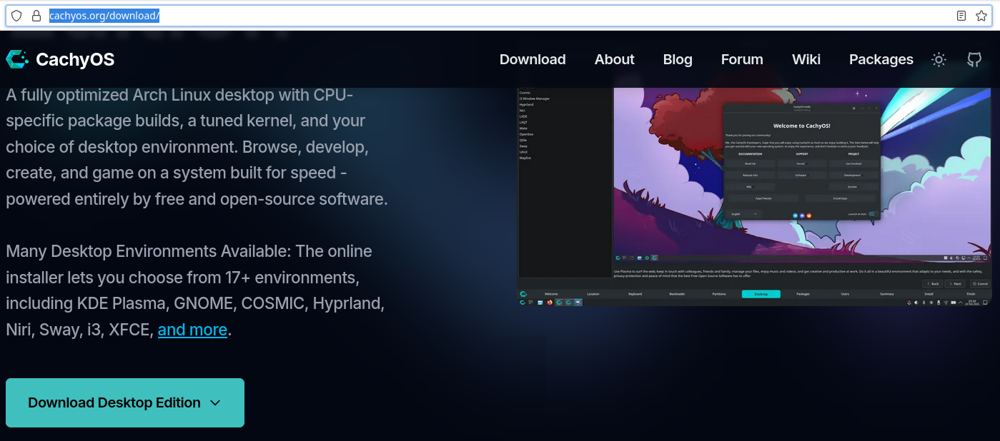
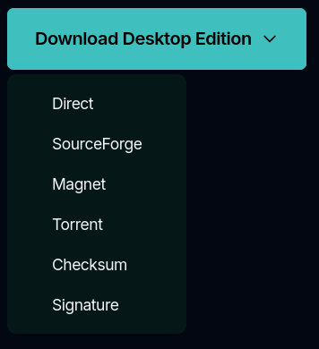
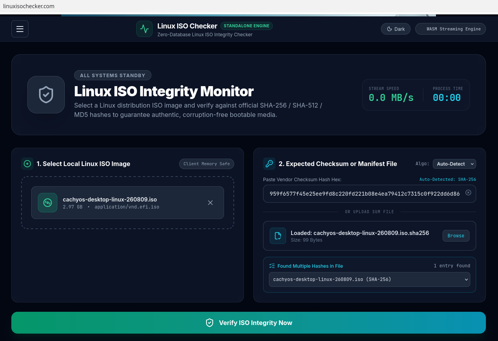
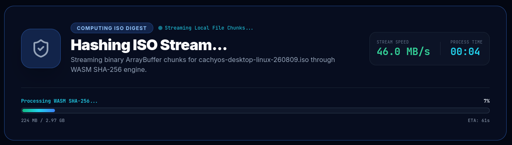
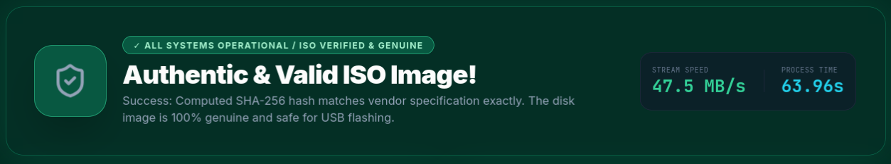

Download safety
How to verify a Cachy OS Download

Visit the official Cachy OS download page to obtain your ISO and its corresponding checksum file.
Click on the "Download Desktop" link and click on "Direct" to download the ISO image.

Alternatively click on the "Torrent" link and use a torrent client to download the ISO image.

Click on the "Download Desktop" link and click on "Checksum" to download the checksum file.
Go to the Linux ISO Checker homepage.
Click "browse files" or drag the ISO image from your Downloads folder into the "Select Local Linux ISO Image" box.
Click "browse" next to "Upload Manifest File" and choose the "Cachy.Sha256" checksum file.
Click "Verify" to compare the calculated checksum with the expected value.

Depending on the file size, the verification process may take a minute or two to process.
When the process has completed, you will see the results of the verification.
